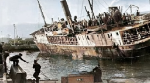
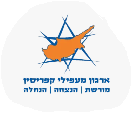

חברות וחברי משפחת מעפילי "מולדת" היקרים,
על החופים האלה, שבהם נשברים גלי הים התיכון, נכתב אחד הפרקים הדרמטיים והאמיצים ביותר בסיפור הקמתה של מדינת ישראל. אל החופים הצפוניים הללו נשאו את עיניהם הורינו וסבינו – 1,568 מעפילים גיבורים ניצולי שואה – שהפליגו מנמל מטאפונטו באיטליה במרץ 1947.
במהלך ההפלגה התמודדה הספינה עם תקלות מנוע קשות ונטייה מסוכנת על צדה בים סוער. למרות התנאים הבלתי אפשריים והמפגש המאיים עם המשחתות הבריטיות, גילו המעפילים והמפקדים נחישות ועוז רוח עילאי, עד שנגררו לחיפה וגורשו למחנות המעצר בקפריסין.
"כל שלט הנצחה הוא יד זיכרון חיה – גשר שיחבר בין אלפי המטיילים לאורך החוף לבין סיפור הגבורה, המסירות והנחישות של מעפילי 'מולדת'."
אנו פועלים במסגרת מיזם לאומי להנצחת מורשת ההעפלה לאורך חופי המדינה. המטרה של קהילתנו ברורה: להקים תחנת הנצחה ושלטים אינטראקטיביים באזור ראש הנקרה – בנקודה הצפונית שבה פגשו המעפילים לראשונה את חופי הארץ אליה ערגו.
רגע של עדות: מעפילי מולדת מספרים
צפו בעדויות וברגעים ההיסטוריים של מעפילי האונייה "מולדת":
תעודת זהות היסטורית: אוניית המעפילים "מולדת"
| נמל ומועד היציאה | מטאפונטו, איטליה (23 במרץ 1947) |
|---|---|
| מספר מעפילים | 1,568 מעפילים ניצולי שואה |
| ההגעה והעימות בים | 29 במרץ 1947 – התמודדות מול משחתות בריטיות בתנאי ים קשים, תקלות מנוע ונטייה חריפה של הספינה על צדה |
| הגירוש לקפריסין | האונייה נגררה לנמל חיפה והמעפילים גורשו למחנות המעצר בקפריסין |
| מיקום שלט ההנצחה | ראש הנקרה |